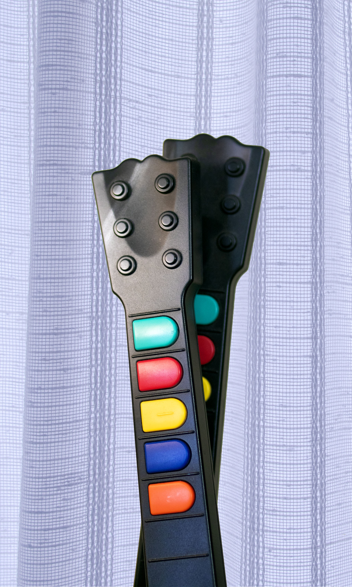

In Living room, a short distance from Darts are the world’s two tallest buildings known as the two towers. This is where the radio for all of The People’s Union of Living Room is stationed, though signals can be reached as far away as Bedroom. These towers are the center for entertainment streaming, and their numerous floors are the home of multiple radio stations, music, and live game shows. They also extend underground where secret agencies of Living Room plan government programs and propaganda.